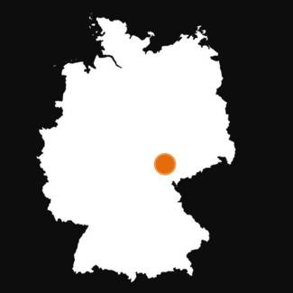

Challenges and local solutions of demographic change in service provision17
In this chapter local solutions to the adaptation of services and infrastructure to demographic change will be presented, based on the best practices analysed and pilot projects carried out in the framework of the ADAPT2DC project.
5.1. Issues to consider
Most of the analysed solutions concentrate on adaptation to demographic change accepting it as the framework of action, as a more realistic aim compared to changing demographic processes themselves, (such as, increasing fertility rates and attracting migrants). Generally speaking, ageing and shrinking are accompanied by the emerging of a quite standardised sample of needs, such the demand for new health and social services and infrastructures, new mobility and transport systems, new cultural and learning initiatives.
Local solutions to such changes are crucial to tackle consequences of demographic change, as many of the essential services are provided at local and regional levels. Small territorial systems such as regions and settlements have large potentials in adaptation processes. Feasible policy solutions are more likely to be found using a bottom up approach, developed at the local scale than a top-down approach, elaborated by the central government. Therefore the regional and local level is an appropriate arena for designing and implementing policy responses to such demographic processes. Local responses to demographic change will have a grave effect on the area’s economic competitiveness, social cohesion and quality of life.
Voluntary engagement is often key to successful actions, since they involve additional resources and increase the community’s engagement. Therefore support for voluntary engagement in the organisation and financing of infrastructures and services is useful. However, experts in the ADAPT2DC projects warned that too much dependency on voluntary engagement is a risk which does not allow long-term planning.
Policies are rarely brand new products; they are almost always the result of the mobilisation of existing policies. There are already many good examples and projects existing across Central and Eastern Europe. Awareness raising about promising practices can also support future actions. For example Thuringia Future Prize is being awarded every second year to initiatives and projects that are dealing in an innovative way with demographic change. Therefore it is not necessary to invent totally new ideas ; building on existing policies applied in other areas may be useful. However solutions often cannot be ‘copied’ from one area to the other, “one-fits-all” solutions are usually not feasible. Actions should always be adapted to the physical, geographic (physical geography, settlement structure), economic, social, administrative, legal and cultural (including habits ad tacit routines) features of the given area. In the process of planning, knowledge about the different responsibilities and modes of providing and financing infrastructures and services is critical.
Cost saving was one of the key aims of the actions analysed; however practice proved that measurement of cost saving is difficult. Moreover, actions may not result in direct cost-saving, but in avoiding greater or future costs, indirect savings or obtaining new incomes or non-monetary benefits (e.g. better life conditions, prolonged activity, reduced ecological stress, policy participation etc.), while adaptation may involve initial costs. Moreover, in certain cases the delivery to all citizens of essential care, health, and mobility services and infrastructure comes first than the need for spending review. Thus new investments can be also considered, on the condition that they are oriented to objectives of self-efficiency and long-term feasibility . In the analysis of practices below – wherever possible – cost saving options are presented. For the planning of future actions to adapt to demographic change, integrated calculations of profitability through considering all costs is encouraged. In addition, independent evaluation of the action, including quantitative indicators wherever possible is important.
It is also important to bear in mind that although the improvement of infrastructure and service provision is an important issue for the quality of life of the local population, it is not the main point for people when they decide where to live. Above all stands the question of finding a job. If people cannot earn their living in a region they will hardly move/stay in a region even if this region offers attractive infrastructures and services. Therefore provision of employment opportunities is crucial.
Complexity versus realistic prioritising
Adaptation to demographic change, ideally, requires a complex and vast programme of actions . However, in reality actors have resource constraints: scarce financial resources, limited human and organisational resources and mandates. Therefore, in reality, a selection of priorities is necessary. When selecting priorities the following factors should be taken into account:
- What are the specific problems, needs and assets of the given area? The use of SWOT analysis18 is an important tool for such an assessment.
- What are the financial and human capacities and mandates of relevant actors?
- How are potential actions interlinked? Areas of such actions are often strongly interlinked, e.g. if social services are spatially reorganised, the issue of transport should be also addressed.
The solution proposed is
to find a compromise between the complexity of potential actions and a realistic prioritising. Often a selective and sectorial policy approach is not only a reasonable option but a necessity. Focussing on just a few problems and policy areas at a time is likely to be more realistic.
Further useful guidelines for the planning of actions are provided in Chapter 4 of this e-book.
Review questions
-
List some important factors to consider when transferring practices from one area to another.
Orienting questions
-
Please choose a theme from the ones below, and consider, who are the main stakeholders in your area when planning actions to adapt to demographic change in the respective theme? Consider actors from (a) local politics (b) local administration (c) NGOs and religious organisations (d) private actors such as utility providers (e) local citizen groups (f) strong informal leaders (g) institutions representing collective interests (h) actors from neighbouring communities (i) actors from other territorial levels.
5.2. Hard infrastructure
5.2.1. Transport and mobility
Ageing has several implications for the transport system, such as:
- A higher demand from the elderly for collective forms of transport, especially in urban areas, due to a growing number of elderly citizens, who rely more on public transport compared to individual transport forms.
- Rising need for accessible, convenient and affordable public transport and infrastructure (such as barrier-free facilities, longer times at traffic lights for road crossing and limited walking distance to and from stops).
- Higher demand for commercial individual transport (such as taxis) and technology-assisted car driving.
- Changing targets and time schedules, destinations.
- Increased relevance of safety issues.
- Increasing need for the provision of medical and special support services at airports and railway stations.
Meanwhile, shrinking and demographic change-related segregation and marginalisation is likely to result in fewer clients, thus, economic difficulties for public transport providers. However, a functioning transport system is especially important in shrinking regions where part of the needed infrastructure, health care and social services cannot be accessed on the spot; therefore a good connection to settlements providing such infrastructure and services is fundamental.
The transferability of the best practices in the field of transport and mobility is evaluated to be comparably high by experts in the ADAPT2DC project. However, it is important to note that many of the solutions proposed below are not a real alternative but a complementary instrument to improve transport opportunities, as communities are mostly legally obliged to maintain certain transport, in particular pupil transport. However, they are worth considering, as they can be vital tools to serve residents’ mobility needs when public transport possibilities may be reduced. In addition, the development of transport opportunities is relevant both in terms of adaptation to demographic change, and means a possible instrument to slow down/counterbalance such trends: development of transport, the road and rail infrastructure to enhance regional accessibility and connectivity to economic centres is a key factor in affected areas’ economic competitiveness.
The resource need and cost saving opportunities of different actions widely differs. The closure or deactivation of roads is likely to have only moderate influence on controlling excessive spending, while the reorganisation of public transport, the introduction of new, flexible forms of transport may be more realistic and offers a real cost saving option. Most proposed actions require an initial investment but offer an opportunity for longer term cost saving while maintaining local residents’ mobility.
Existing practice suggests that successful adaptation techniques may be:- Introduction of demand-based public transport provision.
Village Mobile in Klaus, Steyrling, Kniewas, Upper Austria
The village mobile was introduced in 2002 and since then runs flexible and demand-based. People who would like to use the bus have to call the driver half an hour in advance. The stops of the village mobile have been integrated into the public transport system, thus it provides a contact to the existing but insufficient public transport. Voluntary drivers drive the bus from Monday to Friday, from 6 a.m. to 7 p.m. Cost saving is given through the activation of voluntary engagement, the integration into the public transport system and inter-communal and -organisational cooperation. In the first year, when the village mobile was introduced the costs were around 25 000 €, in the following years the costs dropped to 15 000 €. The costs are being covered through member fees for the association, events, donations, the sold tickets and subsidies from the Federal State of Upper Austria. Additionally the introduction of the village mobile was integrated into the EU-Project ARTS and by that obtained 22 000 €. For the following years it was agreed that the Department of the Federal Government of Upper Austria will cover 50 % of the expenses.
More information:
Verein Dorfmobil KSK, 4564 Klaus an der Pyhrnbahn 100, Tel.: + 43 (0) 7585 25513, info@gemeinde-klaus.at
http://www.gemeinde-klaus.at/gemeinde/DorfmobilWeb/Verein.htm
- Merging private and public mobility forms, such as carpooling, spontaneous car passenger systems or making school buses available to other passengers.
CARLOS in Burgdorf, Switzerland
CARLOS is a spontaneous car passenger system without registration. At digital columns that are integrated into the stops of the public transport system people can enter their destination and purchase a ticket. The destination is visible for drivers who pass by. The driver who is willing to pick up the waiting passenger receives the ticket which can be exchanged at gas stations or the public transport agency. The driver receives half of the ticket price. For safety reasons CCTV of the columns and insurances for drivers and passengers were introduced. Cost reduction is achieved by integrating the commuter service into the public transport system.
More information:
CARLOS GmbH, Martin Beutler, Muristrasse 79, CH-3006 Bern, Tel.: +41 (0) 31 333 45 17, martin.beutler@carlos.ch
Steinrück, Barbara; Küpper, Patrick (2010): Mobilität in ländlichen Räumen unter besonderer Berücksichtigung bedarfsgerechter Bedienformen des ÖPNV, p. 55
http://www.carlos.ch/index.html
- Combination of goods traffic and passenger services.
- Introduction/development of barrier-free facilities.
- Use of low capacity vehicles.
- Adaptation of routes and time tables for changing needs.
- Avoiding redundant transport stops, lines, turns.
Stop by Need, district Dahme-Spreewald, Brandenburg, Germany
In the area request stops were introduced. Here the passengers have to press a button in order to signal the bus driver that they wish to use the bus and the driver includes the stop in his route. Cost saving is realised by avoiding redundant transport. This also allows for an extension of the transport offer, which might lead to an increased income for the providers.
More information:
Regionale Verkehrsgesellschaft Dahme-Spreewald mbH, Geschäftsleitung und Niederlassung Luckau, Nissanstraße 7, 15926 Luckau, Tel.: +49 (0) 3544 5001 0
info@rvs-lds.de
http://www.rvs-lds.de/rvs_service.html;
http://www.rvs-lds.de/tl_files/RVS_Dokumente/Bedarfshaltestellen/anleitung-beha.pdf
- Attraction of new clients (e.g. tourists).
- Lowering standards and more flexible rules/guidelines, such as, allowing the activation of voluntary engagement of citizens (e.g. as voluntary drivers) in public transport.
- Attraction of public (both national and local) and private funding.
- Flexible transportation solutions to meet the residual demands (e.g. cycling, taxis).
KombiBus, in Saale-Orla-Kreis, Germany
“KombiBus” means the transportation of goods within the “normal” public passenger transport by bus. Thus it is a combination of goods transport with passenger transport. The backdrop is the declining income of the bus company, which is due to shrinking passenger numbers. The goal is that the declining income of the bus company shall be compensated through a parallel transport of goods (which generates additional income for the bus company), in order to make the public transport in rural areas more efficient and attractive and able to maintain the existing quality. Existing network structures would be used, unecological and uneconomical parallel transport would be avoided. Moreover an attractive regional goods transport system would be available for regional companies, so that they don’t need to maintain their own logistics system or book expensive professional parcel services.
The inspiration for this measure came from the head of the Kombus GmbH, which is the regional bus company in the Saale-Orla-district. The head of the Kombus GmbH had heard that a similar measure had been successfully implemented in the Uckermark in Brandenburg.
In terms of actions, two main steps were taken:
Firstly, a “legal” study evaluated if and under which conditions such a combined transport system can be implemented. The study answers questions such as: is it allowed (under Thuringian law) that a passenger bus transports also goods? Are any certificates or licences to be procured? What happens in case of damage of the goods/ what about liability insurance? Is the public subsidy (for the bus company) affected by this new system? For this, a lawyer was sub-contracted. The results of the study were overall positive: The lawyer did not see any legal hindrances to the implementation of the KombiBus system.
Secondly, an analysis of market potential was carried out. For this, the University of Applied Sciences was sub-contracted, in particular the institute for transport. The goal was to identify potential users of the KombiBus system. Within this process, several interviews were held with interested companies in the region. From the 180 companies that were initially asked, 22 showed a general interest in using this service, and 5 showed a specific interest in the sense that they would be willing to test the KombiBus system if a pilot bus line is installed. The idea is that more companies would use the new service as soon as it is up and running and as soon as the success is proven.
On the basis of these two studies, the bus company shall be able to make the decision whether the KombiBus is legally feasible and economically useful. It is expected that perhaps a “testing bus line” will be the starting point. Then an investment would have to be made (by the bus company) particularly into a disposition software, perhaps into the installation of shelves into the buses, the training of drivers, etc.
It becomes evident that the pilot action is mainly an initiation in this case. The main management processes will be maintained by the Kombus GmbH. In the long run, the combined passenger-and-goods transport will run without extra help from any EU project, it will be self-sufficient.
In terms of impact, it is expected that this “new” service will generate extra income for the bus company, which is currently operating at a loss. Thereby, the sustainability of public transport is ensured, which also maintains the quality of life for the population. At the same time, local companies have a cheaper and quicker possibility to transport their goods to other points in the district, which again saves costs for them because professional parcel services are expensive.
Long-term economic costs for longer distances and higher expenditure of time can be saved. Resulting capacity from the declining number of passengers on the busses will also be well-used. At the same time, local companies can save because a professional parcel service is more expensive than transporting goods in the “KombiBus”. A specific indication of cost savings in € it is too early at this point. The “KombiBus” was launched as part of the Demography Coaching exercise carried out in Saale-Orla District, Germany, as a pilot action in the ADAPT2DC project.
Further information:
Nicolas Ruge
Thüringer Landgesellschaft mbH
Weimarische Straße 29 b
99099 Erfurt
Tel.: 0361 4413-244
Fax: 0361 4413-272
n.Ruge@THLG.de
- Promotion of further, flexible forms of transport such as cycling.
- Integrated transport planning, e.g. transportation for specific needs (e.g. to access health and social services of elderly people) combined with existing public transport, flexible fare system.
Bürgerbus Seefeld, Germany
The “Bürgerbus Seefeld” has been active since 1998 and works to “fill the gaps” of the official timetable. In certain times, it functions as call-a-bus in order to enhance efficiency. The connection to the train station is a main focus of the busline.
New Public Transport Concept in Salzwedel, Saxony-Anhalt, Germany
The public transport system of the shrinking area was reformed, including a new, more effective network of routes including tourist routes, possibility for the free carriage of bikes, a flexible fare system. The latter made public transport more attractive for tourists, in addition, the company was involved in a project that transports children to their kindergarten. Cost saving can be realised through the creation of additional income. Between 2007 and 2011 the yearly passenger numbers increased from 2 800 to 80 000.
More information:
PVGS Personenverkehrsgesellschaft, Altmarkkreis Salzwedel mbH & IGZ, 29410 Salzwedel
riehn@pvgs-salzwedel.de
http://www.menschenunderfolge.de/db/frontend.php/api/detail/id/1258
- Making of access to public transport a compulsory criterion for planning social infrastructure.
Some of the above techniques create new revenue sources for public transport providers (such as, opening up school transport for other passengers, merging of people and goods transport). Development and application of modern communication instruments is an important support for many of the above adaptation actions.
Orienting questions:
- Are there any settlements/settlement quarters in your area, which have no access to public transport? (I.e. the first public transport stop is further than cca. 500 metres?)
- Are you aware of any settlements/settlement quarters in your area where the schedule of public transport does not meet needs (e.g. lack of access to workplaces, services on time, lack of public transport during the evening)?
- Are public transport facilities barrier free in your area? How did public transport fares change in your area in the past 5 years?
- Who are the (main) public transport provider(s) in your area?
- Were there any changes in the public transport system which affected the public transport offer in your area in the past 5 years (e.g. shutdown/opening of railway of bus lines, rearrangement of schedules)?
- Are you aware of any new, innovative solutions to improve the mobility of local residents (e.g. car sharing, call buses, possibility for other passengers to enter school buses)?
5.2.2. Housing & public spaces
In housing and public spaces shrinkage of population leads to vacancies, which result in:
- a decrease in property value,
- security problems,
- a strong negative image of the area which again decreases the attractiveness, thus the value of properties in the vicinity.
Ageing changes needs regarding housing, but also poses challenges to sustainable spatial development, as it changes demands regarding the type and spatial location of services, institutions, and public spaces.19
Actions to deal with such a situation include:
- Reorientation from new construction to refurbishment of existing buildings to improve attractiveness and increase property value.
- Adaptation of housing to the needs of residents, to make elderly citizens to be able to live in a familiar environment for as long as possible.
- Adapting to the needs of young families, single parents, etc.
- Vacancy management, in order to find the most effective management solutions of existing, abandoned buildings, which might include:
- function change in order to adapt functions to the needs of the community;
- downsizing buildings to save costs (on longer term) and adapt functions to the community’s needs;
- Demolition of buildings (unused residential, commercial or industrial objects) to save costs, and prevent a (further) decrease in property value, security and image problems. In areas subject to demolishment new green areas may be created that increase the quality of the residential environment. (However, this solution requires a large amount of public funding, which should be at least partly covered by special financial schemes like taxes on the increase of the property values.)
Cost effective innovative solutions on public property maintenance, energy savings by optimisation of public buildings. Vejprtsko, Ústi Region, Czechia
The pilot action of the Ústí region is to propose a governance model for the municipalities in the area for reducing maintenance costs of public buildings . The spending on public buildings can be quite a burden for the municipal budget, one of the main factors are heating costs. But also a more efficient usage of buildings can reduce spending. Vejprty is a mountainous rural area near the border, characterized by small settlements with a predominantly elderly population. The mountain and peripheral features of this area have hindered the development of a local system of both economic activities and services. The area has about 3000 inhabitants and many abandoned unused or partially used buildings after the war and after the fall of communism. The operating costs of these buildings are a burden on the community. These empty and decaying buildings include a former hospital, nursery school, administrative centre as well as factories and housing. The pilot action refers basically to property in municipal ownership. The aim of the project is to identify buildings most costly to maintain, and develop ideas on lowering costs and finding new usage. In the initial stage of the project energy audits were made for the 3 most costly but variously used buildings and studies conducted on the needs of the municipality and local residents so as to identify relevant new functions for affected buildings (such as, business centre, health care centre and social housing). A general savings optimization was proposed and the material prepared summarizing various options of energy measures from basic insulation to the implementation of so called “smart” buildings.
The last step in turn is the possibility of funding energy measures from external sources, as the municipalities do usually not have enough of their own funds. At length cost reduction will be reached through energy savings and meaningful use the object, therefore decreased maintenance costs. The proposed governance model is a set of steps towards the efficiency of public buildings and thereby public funds. The money that is not spent can be used for investment in other community activities.
Schematically, the governance model consists of the following steps:
- Analysis of strategic documents
- Economic evaluation - analysis of the costs of operation and maintenance of objects in relation to the budget
- The proposal to improve the current situation in relation to energy saving measures
- Energy audits and certificates of selected public buildings
- Study of the use of objects and draft timetable for the implementation of the proposed activities
The ’Cost effective innovative solutions on public property maintenance, energy savings by optimisation of public buildings’ was launched in Vejprtsko, Ústi Region, Czechia, as a pilot action in the ADAPT2DC project.
Further information:
http://www.kr-ustecky.cz
Michaela Řeháková
rehakova.m@kr-ustecky.cz
tel: 00420 475 657 938
Ing. Jana Nedrdová
nedrdova.j@kr-ustecky.cz
tel: +420 475 657 944
The hamlet of Bussana Vecchia, Italy
The hamlet of Bussana Vecchia, in Province of Imperia, is a good example to take, to understand potentialities and errors that can occur in such an idea. Completely abandoned from the end of the XIX century, it began to be populated again starting from the 50s, when Italian and foreign artists gradually came to live there in the abandoned houses. In few years the hamlet gained a popularity, stemming from the possibility offered by a place that was open to all opportunities of use, in this case in ecological and artistic field.
Starting from the 80s, until nowadays, there have been many disputes regarding the property of the houses. This shows that, without a public control or initiative, projects such this can face difficulties hard to be solved. On the other hand, a public steering of the process could bring to a similar result in a more smooth way, thus bringing direct benefits to the municipalities and the communities living in peripheral areas.
Innovative tools to manage the overdimensioned public infrastructure (Maribor)
This pilot action deals with saving municipality costs for maintaining public buildings and roads. The main approach of the pilot action is to use several cost reduction tools on the same pilot area - city center of Maribor - in order to strengthen synergy, comprehension, sustainability of the cost reduction on short and long time span, and also to encourage significant economic, cultural, social, environmental and other impacts.
The pilot action began with geographical mapping and analysis of publicly ownedinfrastructure (public housing, roads) in Maribor in order to identify potentials for reduction of the maintenance costs. Intensification (by the development of the attic of buildings) and possible changes of the use of the public houses are employed as main instruments for reduction of the maintenance costs per square meter. In the case of roads the introduction of by-street parking and reducing street lighting costs are examined. The tool is innovative by way of using up to date GIS tools. The developed algorithm is implemented as spreadsheet analysis program. The spreadsheets enable users to easily change the input parameters and easily re-use this tool for unlimited situations. The methodology also included measures to show that costs can be saved in public housing maintenance, street lighting and in providing parking regimes in the centre of the city.
When this tool is applied, the results are quite specific. For Maribor as a model the following anticipated cost savings were calculated: About 14 per cent average savings per square meter in the case of developing the attic of buildings; about 28 per cent reduction in maintenance costs for the street in the case when by-street parking is introduced; about 68 per cent drop in electricity consumption of street lighting in the case when the lamps are replaced by LEDs.
The ‘innovative tools to manage the overdimensioned public infrastructure’ was launched in Maribor, Slovenia as a pilot action in the ADAPT2DC project.
Further information:
dr.Vlasta Vodeb
Urban Planning Institute of the Republic of Slovenia
www.uirs.si
vlasta.vodeb@guest.arnes.si
Land use management in Litzendorf, Germany
Litzendorf (in Oberfranken) established an active land use management: The municipality calculated the population growth in the coming decade and came to the conclusion that the existing vacancies and brownfields in the town are more than enough to meet the needs of incoming population. The development plan of Litzendorf reflects this and is under the headline “densification”. The “register of building gaps” allows the direct marketing of the vacancies to potential buyers and since 2007 already 20 parcels of land have been sold.
Reduction of Public Dwelling Stock, in Germany
Within the framework of the ExWoSt research field “Stadtumbau West”, a programme initiated by the German Federal Government that promotes studies, research and pilot projects in the area of urban restructuring, several strategies were tested and applied in seven pilot regions (Albstadt/Baden-Wurttemberg, Bremen-Osterholz-Tenever/Free Hanseatic City of Bremen, Lübeck-Buntekuh/Free Hanseatic City of Lübeck, Oer-Erkenschwick/North Rhine-Westphalia, Salzgitter/Lower Saxony, Selb/Bavaria, Wildflecken/Bavaria) that shall help to reach the main objective of this project: reducing the public dwelling stock and adapting the public infrastructure to demographic and economic developments. One strategy was the demolition of not needed public dwellings, accompanied by image strategies for the involved city districts in order to retain and/or attract new inhabitants. The new, free spaces were used for the creation of green areas. Remaining houses were sanitised energetically and optically through new, glazed lifts in order to make the city quarters more attractive for remaining and new inhabitants. The project requires significant investment, concrete costs for the reduction depend on the used method, reducing whole blocks is less expensive than their partly reduction. The projects were financed by the programme “Stadtumbau West”.
More information:
ExWoSt-Forschungsfeld Stadtumbau West
http://www.stadtumbauwest.de/exwost/inhalte/Guter_Ansatz_Rueckbaumanagement.pdf
http://www.bbsr.bund.de/BBSR/DE/FP/ExWoSt/exwost__node.html
Vacancy cadastre Remptendorf/Saale-Orla District, Germany
As a basis for future infrastructure decisions a vacancy cadaster is carried out in the municipality of Remptendorf in the southern area of Saale-Orla-District. The idea is to link residents' registration data and cadastral data in a geographic information system (GIS) and to display it graphically. This will enable the mayor/the local government to focus on the vacancies when advertising property in their town; in the long run it will ameliorate the condition of building stock.
With the help of the vacancy cadastre, vacancies and vacant lots can be displayed. So users are able to draw conclusions from developments in recent years and to determine objectives and actions for the future. As a result even anticipated vacancies should be displayed (i.e. houses which are currently occupied but which may become vacant in the coming years, for instance due to old age of inhabitants). In this way, the local actors/politicians can focus their activities on the development of the town centre and avoid the costly development of suburbs (each new suburb needs to be connected to infrastructure networks, which costs money). Two additional advantages are reached by the focus on town-centre-development: firstly the quality of the building stock is maintained in the centres (as opposed to decaying vacant buildings) which maintains the value of surrounding buildings, and secondly people living in the centres save money on commuting (which people in suburbs usually face).
Specifically, a (previously identified) software is used to “combine” the cadastre data with the registry data and thereby a visualization of the current vacancies of the town Remptendorf is possible. This is the task of the Demography Coaching – afterwards, the task of the mayor (or the local administration) begins, namely to concentrate on the vacancies in their marketing activities or in their development activities or planning activities (so that the town centre is maintained in a good quality and enough tenants are kept in the town centre / at the same time, the necessity for developing “new” suburbs is removed, because now interested buyers/investors/families can find out precisely which vacant buildings are available in the town centre). This is the so-called “town centre development”.
The ’Vacancy cadastre’ was launched in Remptendorf/Saale-Orla District, Germany, as a pilot action in the ADAPT2DC project.
Further information:
http://www.vhw.de
Nicolas Ruge
Thüringer Landgesellschaft mbH
Weimarische Straße 29 b
99099 Erfurt
Tel.: 0361 4413-244
Fax: 0361 4413-272
n.Ruge@THLG.de
- Expansion of the residential rental market . It is an important tool to make the local housing market more flexible, being able to adapt to demographic change but is can also support measures to counterbalance it: good quality and affordable housing supply effectively supplements measures to vitalise the local economy, to attract new residents in the area.
- Improvement of energy efficiency, thus decreasing housing costs, improving living conditions and acting against climate change.
- Development of facilities for community-based care to promote a shift from institutional care of elderly and other vulnerable population groups (such as, people with disabilities).
-
Change in the approach of spatial planning. In the past decades, spatial planning was focusing mainly in managing growth. However, demographic change needs a change in such an approach: instead of the current growth-oriented strategies
decline -oriented ones may be more relevant. In shrinking areas, developments should be turned to
brownfield areas instead of greenfields. Instead of suburbanisation,
development should be focussed on the establishment of a compact settlement structure . Main features of a compact settlement structure are:
- a variety of functions,
- harmonious spatial mix of functions, no excessive distance between workplaces, housing, commercial and recreational areas,
- relative density,
- clear boundaries, lack of urban sprawl.
In ageing societies more attention should be paid to the specific needs of elderly population and people with disabilities and with restricted mobility when shaping the land use structure of settlements. In order to prevent shrinking, child- and family friendly settlements need to be developed in addition to economic measures creating employments.
Revitalisation of the City Centre, Güstrow/Mecklenburg-Western Pomerania, Germany
In the project, an abandoned area was purchased to construct a quarter for the elderly there. The new centre contains apartments, a community building and service facilities. Short distances between the social facilities lead to a higher mobility of the elderly and by that support an autonomous lifestyle. Cost saving is realised through prolonging an autonomous and active life style for the elderly, in addition, move of elderly people to the area opens up opportunities for not needed infrastructure to be demolished and social services bundled.
The project offers cost savings opportunities, as the revitalised city centre motivates especially the elderly to move into the area, so infrastructure not needed anymore in other areas can be demolished and social services bundled. Additionally the elderly are supported by leading an autonomous and active lifestyle which helps them to stay longer independent and healthy. All these points help to save public spending on the long term.
Further information:
http://www.stadtumbau-ost.info/
http://www.baumodelle-bmfsfj.de/Baumodelle/33_Guestrow/33_Guestrow_F.html
Spatial planning is also a key to the adaptation to demographic change
in rural areas, where shrinking and ageing makes the reorganisation of infrastructure and service provision unavoidable, as such actions may include a
spatial rearrangement of infrastructure and services .
Spatial rearrangement of infrastructure and services may include:
- spatial concentration of functions and ensuring access of all citizens to the central place where functions are located,
- spatial distribution of functions, with a strong co-operation between communities to ensure access to services and infrastructure to all citizens.
Decision regarding spatial concentration or distribution should be based in the given area’s characteristics, especially in terms of settlement structure, physical geography and transport connections.
Policies aiming to decrease regional differences may play a role in demographic restoration, or at least in slowing down shrinking and ageing.
Integrated and efficient planning of infrastructure in rural areas, Lommatzsch and surrounding communes/Saxony, Germany
The aim of the project was to restructure existing infrastructure through inter-communal cooperation. For that purpose extended analysis of the potentials of the communes was carried out. The analysis focussed on the central social and technical infrastructure, the public transport system and retail. Also the communal finance situation was analysed, then the demographic change and its consequences for the infrastructure provision was analysed. Afterwards, the mayors of the area were involved formulating aims concerning the future development of social and technical infrastructure, on the basis of which the project team developed concepts securing an efficient and qualitative provision with infrastructure under demographic change. Realised concepts included: organisation of semi-central facilities for water supply and sewage water treatment; establishment of subsidiary medical practices in the surrounding communes that work together with a central practice in the main town. New concepts introduced offer the possibility of cost savings in the longer run. The project was part of “MORO - Modellvorhaben der Raumordnung”, a programme of the Federal Ministry of Transport, Building and Urban Development (BMVBS) for testing and realising innovative spatial planning approaches together with stakeholders from practice and the sciences.
More information:
http://www.bbsr.bund.de
Orienting questions
- What is the ratio of public housing in your area? What is the ratio of owner occupied housing?
- Who is responsible for the public housing stock in your area?
- In case there is vacant public property in your area: Who is responsible for the management of vacant public property in your area? How does it manage vacancy?
-
Are there any examples in your area for:
- function change – what happened?
- downsizing buildings (either partial demolition or closure of parts of the building and/or function change of other parts of the building)
- demolition of buildings – what happened to the area managed after the demolition?
-
Were any programmes carried out to improve energy efficiency? What kind of buildings were involved?
Is there urban sprawl in your area?
In urban areas:
- Were any actions taken in the past 5-10 years that aimed to develop a more compact urban structure in your area? If yes, list a few such actions!
- Were there any actions that aimed to create a more elderly friendly built environment in your area? What were these actions?
- Were there any actions that aimed to create a more family- and child friendly built environment in your area? What were these actions?
In rural areas:
- Were there any actions that aimed a spatial rearrangement of functions as a response to demographic change in your area? What kind of actions were taken?
5.2.3. Water/sewage treatment
Adaptation of such network infrastructure to the effects of demographic change is challenging, as the resource demand for the modification of technical infrastructure is usually high . However, due to the increasing per capita costs and potential technical problems (e.g. in case of loss of clients of water provision systems) such adaptation may be necessary in order to ensure the long-term operability of systems.
Demographic change leads to the decrease in the need for water provision and sewage treatment which renders formerly designed systems financially difficult to maintain . In order to cope with arising problems the following methods are recommended:
- Reduced, refitted, re-organised facilities and infrastructure (including cutting back of infrastructure if relevant).
- Development of decentralised or semi-centralised systems, as centralised systems may have much higher fix costs and cannot be adapted rapidly to changing population numbers. Especially in dispersedly built areas not every house needs to be connected to a central sewage plant, if there is an effective local solution for waste water management.
- In certain cases, centralisation seems a good solution, e.g. construction of a big sewage water treatment plant taking over sewage water of the neighbouring communes, which costs split between involved communes.
- Cooperation in management and service provision between providers and decentralised networks . This unifies dispersed markets into larger ones, which is an important step to mitigate the financial burden caused by oversized infrastructure, and helps to reduce costs.
- Creation of new income sources : linkage of energy generation and sewage water treatment creates revenue sources for providers.
- Introduction of flexible technical solutions.
Efficient purification plants, Bad Ems/Rhineland-Palatine, Germany
The project aims a higher efficiency of purification plants by exchanging pumps, optimising the sewage sludge digestion, shutting down the agitator during ventilation and building a micro gas turbine for the usage of sewage gas. Cost savings could be realised through a more efficient energy supply and the creation of additional income for the purification plant by using sewage gas for additional gas production.
More information:
Verbandsgemeindeverwaltung Bad Ems, Bürgermeister Josef Oster, Bleichstraße 1, 56130 Bad Ems, Tel.: (02603) 793 0, vg@bad-ems.de, http://www.bad-ems.de, Bundesumweltamt (2010) (Ed.): Demografischer Wandel als Herausforderung für die Sicherung und Entwicklung einer kosten- und ressourceneffizienten Abwasserinfrastruktur, Dessau-Roßlau, p. 128-129.
EuWAK – Natural gas and hydrogen produced in purification plants, Bottrop, North-Rhine-Westphalia, Germany
In the project, the fermentation gas is being used to produce natural gas and hydrogen. The former covers the whole heat- and electricity demand of the purification plant. Parts of the fermentation gas are converted into natural gas, supplying the vehicle fleet of the plant. The rest of the natural gas is being converted into hydrogen and forwarded to a neighbouring school and a swimming pool, to produce electricity and heat. Cost saving can be realised through the usage of fermentation gas for the production of electricity and heat for the purification plant, gas stations and neighbouring infrastructures such as schools and living complexes.
More information:
Emschergenossenschaft Lippeverband, Kronprinzenstraße 24, 45128 Essen,
Tel: + 49 (0) 2 01 104 0
http://www.eglv.de/
- Introduction of efficient management, e.g. autonomous planning, announcement and construction management of building activities.
- Development of a more efficient energy supply.
Review questions
- What are the main effects of ageing on transport needs?
- What are the main effects of shrinking on transport needs?
- List a few adaptation techniques that can improve the mobility of residents in areas subject to demographic change!
- List a few techniques that can be used to adapt water/sewage treatment facilities to demographic change!
Orienting questions
- How many percent of housing is connected to the sewage network in your area?
- How did the price of water and sewage treatment change in your area in the past 5 years? How did it change compared to the national average (if such data are available)?
- Are you aware of any new, innovative solutions to adapt water/sewage treatment facilities to demographic change in your area?
5.3. Social infrastructure
5.3.1. Health and care
Although the number of inhabitants is likely to further decrease in the coming years in most regions in CEE, the demand of health care and long-term care will increase due to higher life expectancy .
These challenges include:
- Increasing public health expenditure for health and longterm care as a consequence of the increased number of people requiring such care. Cost of service delivery in health care is expected to also increase due to standards imposed by the national health care funding system in all countries.
- Decreasing number of ‘active’ individuals . Decrease in the number of people actually active in the labour market decreases tax revenues, and impede economic growth, which poses major problems for public finances. There are several policies on the national levels aiming to improve the ratio of active earners. Reforms of the pension system, and especially retirement age, and pushing back various forms of early retirement as well as channel back people who are able to work but are presently inactive into the labour market are actual issues in the CE countries.
- Increasing demand for quality services, since health and care are Services of General Interest (public good) that is obligatory to provide by law and have to be delivered and secured by the authorities.
- Lack of country doctors . The provision with health care is particularly problematic in declining regions because doctors have to take care of more and more people living on a great territory, and the communes dispose over less and less money to secure health care. This situation makes it rather unattractive for young doctors to settle, especially in rural areas.
- Lack of care staff (nurses) in care homes
Main challenges relating to health care and long-term care are not only determined by demographic changes and the financial implications for public expenditure, but also by the often poor financial situation of elderly people . For instance even if the health care service itself is free of charge for them, transport to the doctor or payment for the medicines might cause financial difficulties for them.
Recommendations:
- Supporting health prevention and personal responsibility.
- Supporting home care services to reduce public costs, and help the people to live and function independently as long as possible in their familiar surrounding (e.g. with the help of AAL Systems - Ambient Assisted Living Systems).
Adaptation of housing to promote independent life/Arzberg, Oberfranken, Germany
In Arzberg, a model apartment was equipped with ambient assisted living systems (AAL-systems) in order to enable handicapped and elderly people to stay in their homes for a longer time. These systems cover a wide range of application possibilities. In Arzberg, focus is upon the fields of health, security and comfort and control systems, a few examples are mentioned below.
- Health systems are aimed at measuring and analyzing health data such as blood pressure, pulse, weight. If values change for the worse, the technical systems sends a warning via Email, e.g. to the doctor or relatives. In doing so, inhabitants are able to keep a health diary.
- Systems of security and comfort include, among others, sensors to control opening and closures of windows and doors, smoke detectors and emergency lamps. In case of an emergency, the system gives the alarm and automatically sends the alarm to a predefined recipient.
- Control systems include heating operation by remote control, opening and closing doors as well as switching appliances on and off.
A small town like Arzberg benefits if the elder population keeps living in the town as the social environment of the population is kept up and further outmigration is avoided. In the long run, the AAL systems shall enable elderly people to live in their own flats for longer, so that the point when someone needs to move to an (expensive) care home is at least postponed for some months.
The “model apartment” shall be opened in regular intervals so that the interested public can have a look at the possibilities of how to adapt their own homes with relatively cheap means. The installed systems are relatively affordable to install, so that people can draw inspiration for their own homes. The more people decide to apply the suggestions (from the model flat) in their own homes, the better.
The ’Adaptation of housing to promote independent life’ was launched in Arzberg, Oberfranken, Germany, as a pilot action in the ADAPT2DC project.
Further information:
Markus Neufeld, markus.neufeld@fau.de
Kochstr. 4, D-91054 Erlangen, Germany, +49 9131 85-23574
Thüringen Stipendium, Germany
So far, about 100 young doctors have benefited from the scholarship “Thüringen Stipendium”. A number of graduates have already established their own medical practice in Thuringia, according to the foundation. In addition, the foundation is planning a programme in which it will buy its own practices and enable young doctors to work as employees for the first years of their career in order to allow them to get used to the work before having the responsibility for their own practice.
- Introduction of ICT technology into homes (Smart Homes, Telecare, Telemedicine) as part of care for the elderly. The services comprise ICT that include alarms, internet and telephone-based systems that monitor the well-being of older people. It can help in reducing the risk of accidents and increasing the safety, independence, and quality of life of the elderly. Using ICT in health care focuses either on information provision or risk management (avoids travel costs and times).
TelLappi - Securing health care in remote areas, increasing and utilising new technologiesd
This project, which lasted from 2001 to 2007, was implemented by the Lapland Hospital District in Finland. Additionally all 15 municipal health centres of the region were involved. In the course of the project several measures were introduced such as video conferencing, electronic referral system and the long-term storage of images. For the video conferencing all health centres and some special fields of the hospital district were equipped with PC, web camera and microphone. Training lessons were organised for the staff. The video conferencing was introduced especially for consultation services. If the patients need a consultation with a specialised physician in the hospital, they go to the next health centre and are being connected with the doctor via videoconference. For the long-term storage of images the project invested into the digitalisation of x-ray images. Within the project, also the data protection and security solutions of the involved municipalities were improved for a safe storage of patient information. Through the implementation of the aforementioned instruments a compatible infrastructure was built and cost savings could be realised.
The total costs for the project were 2 210 591 €. These costs were covered by EU- and national funds (ERDF and national share were 1 232 074 €) and the involved municipalities (978 517 €). The highest expenditures were caused by the investments into the hardware and the software programmes. Especially the introduction of video conferences among the doctors and patients revealed cost saving options. Because travelling is expensive in Lapland due to large distances, around 400 € per appointment can be saved. The digital storage of x-ray images revealed savings due to less storage costs.
Further information:
Liimatta, Sirpa; Paananen, Tellervo (2007): TEL LAPPI III. From technological initialization to the development of services
http://www.lshp.fi
Telemedical services for senior citizens as a tool for optimising healthcare costs in Malopolska, Poland
The pilot action carried out in the north-western Małopolska (Miechów, Chrzanów, Olkusz and Proszowice counties) was targeted at a group of senior beneficiaries who were selected on the basis of health condition and place of residence. The aim of the action was to provide a tele-medical service (tele-ECG) to examine the beneficiaries’ health condition, improve their life quality, and prevent further deterioration of health. The patients received tele-medical equipment to measure ECG at home, and were provided medical assistance, consultation, and diagnosis both on a remote basis and in person. The action consisted of tele-ECK service provided to a group of 100 patients over 55 years of age. Tele-ECG kits were lent to the patients free of charge, for a period of 1 month. Every patient was instructed on how to operate the kit at home, office etc. In addition, the patients completed a life-quality survey. Subsequently, they were asked to perform at least 3 registrations a day and advised to record as many ECG events as needed. Moreover, patients were offered consultations by a dietician at the beginning and at the end of the examination period. After the examination period each patient received diagnosis, conclusions and recommendations made by the assigned physician in charge and dietician.
The goals were:
- Better access to health care in depopulating areas
- Decreasing costs of high quality health care
- by using the advantages of the new technologies (direct costs)
- by early diagnosis and preventing further deterioration of health (alternative costs)
Given the fact that almost all (97) participants completed the examination, it may be stated that there were no serious difficulties that could prevent or put off some people from participation.
Overall, the Małopolska pilot action has succeeded as a pioneering effort to bring technology closer to the aging society and overcome difficulties related to increasing health care costs in areas facing demographic changes.
Further information:
Korneliusz Fil, M.D., Michal Haranczyk, M.D., John Paul II Hospital in Cracow, Poland
(Contact: Boryczko, Alicja, e-mail: Alicja.Boryczko@umwm.pl, tel.: +48 12 29 90 900)
- Use not needed infrastructure for mobile/local practices and combines it with other offers (health and social centre).
Centre of Culture and Leisure for Senior Citizens in Nowa Huta, Poland
With the re-usage of an abandoned school canteen, Centre of Culture and Leisure for Senior Citizens provides professional help for the elderly, disabled and low-income citizens in the form of day-care, individual and group therapy (occupational therapy, music therapy, art workshop, memory training) rehabilitation for senior citizens and cultural offers. The Centre is located in Nowa Huta, a district of Krakow, where 27per cent of the inhabitants are older than 60 years. The building where the Centre is located is a former school canteen. In the 1960s and 1970s the canteen was providing daily meals for 1500 students. When the number of students using the canteen decreased the city decided to refurbish the building and create a day-care centre for senior citizens. The Centre is regularly attended by more than 250 senior and disabled people. The canteen offers meals for up to 280 people. When needed, the canteen provides catering for other Homes of Social Assistance in Krakow. The event hall can accommodate 250 people. The building is used in an efficient way and performs an important function for the local community.
Further information:
Antoni Wiatr, sekretariat@mddps.internetdsl.pl, Tel.: + 48 12 4256465
http://www.mddps.krakow.pl/
- Better coordination of the existing health care system (with new technological solutions) Cost saving is based on limiting direct travelling to patients and using the technology instead of an on-site practice.
Mobile Dentist
The mobile dentist offers its service once a week additionally to the normal opening hours of its dental practice. For the realisation of this service a specially equipped car had to be installed. The costs for the installation of the mobile dentist car were funded by the Federal State of Brandenburg (4.443 €) and by ELER, the European Agricultural Fund for the Development of Rural Regions (17.773 €). Although the service creates costs in the first place due to the conversion of a normal car into a mobile dentist practice, the service of the mobile dentist helps to avoid costs in a long term for extended treatments due to preventive checkups.
Further information:
competition BMVBS 2011 "People and Success"
http://www.menschenunderfolge.de/beitrag.html?frame=../../db/frontend.php/api/detail/id/751
http://www.eler.brandenburg.de/sixcms/detail.php/492304
- Building strong cooperation between regional health care and transport providers (provide health care in the closest agglomeration and connect the region to it).
- Incentives for young doctors “learning by doing” via mentoring system . The organisation of mentoring practices (e.g. by more experienced doctors to their younger colleagues) is important, as it can facilitate the process of integration and support of the staff in the field of health care.
Family Doctor Academy - Attracting young doctors to work in rural areas as family doctors
In the district of Hersfeld-Rothenburg, Germany an Academy for family doctors was established by the clinics, practices and the Hessian association of family doctors. The concept involves a mentoring programme for students of medicine and young family doctors. The students are in close contact with their mentors, already established family doctors in the regions. They give advices concerning special advanced training courses and the leading of a practice for family doctors.
Costs can be saved on a long term through the avoiding of additional costs for travel of doctors and patients by attracting young doctors to work in rural areas.
Further information:
Service Agency for Demographic Change
http://serviceagentur-demografie.de
Want to know more? Useful links, further projects in this topic:
Orienting questions
- How provision of health care is managed in your area? Who are the main stakeholders in the field of long-term care?
- How is the provision of health care financed in your area? How public health expenditure changed in the last 5-10 years in your area?
- Were there any shutdowns or reorganisations of institutions providing health care and long term care in your area? If yes, what was the result of such actions in terms of the finance and quality of the given services?
- Is there public debate on improving the quality of (public) health care in your area?
- Are there any settlements/settlement quarters in your area, which have problems with staff provision in health care?
- Are you aware of any new, innovative solutions to improve the health care and long term care of residents (e.g. ICT technologies, Telemedicine, mobile practices, etc)?
5.3.2. Childcare and other social services
Social services is often one of the first sectors that suffer from the consequences of demographic change since the decrease of inhabitants leads to fewer incomes for the communes. Additionally, the provision of social services is sometimes not perceived as absolutely necessary in comparison to health care or water provision. Often communes see only one way to cope with demographic change – cutting of expenditures through omitting voluntary offers in the area of social service, decreasing communal investment and cutting of jobs in administration.
In fact provision of adequate social services – especially child care services – in order to assist women returning to the labour market may be an important factor to mitigate negative demographic trends . Female labour market participation improves the activity rate, thus meliorate the support burden of the active age groups.
Recommendations:
- Cooperation between public and private stakeholders for the bundling of resources.
- Realisation of multifunctional facilities and a flexible organisation within public facilities.
- Spatial bundling of services in multifunctional centers . However spatial concentration only improves/maintains the delivery of social services if the improvement of the physical accessibility of multifunctional centeres takes place at the same time.
- Introduction of new forms of child nursing services or at least a flexibilisation of operation times of childcare institutions. It is more and more necessary due to the stronger flexibilisation of working hours and working models.
Promoting the return of women to the labour market by launching integral nursing services for children in Észak Alföld, Hungary
The Hungarian pilot action is aiming to promote the return of women to the labour market by launching integral nursing services for children. The direct goal of the project is to rationalise the child nursing services and to launch daycare services that act upon unique necessities. The main result of the pilot action is a feasibility study that is elaborated for three settlements (Jánoshida, Jászfényszaru, Jászárokszállás) of the pilot region considering the legal and local environment. The study is focusing on the professional establishment of management issues of daycare services and offers 3 operational models for child day care nurseries by taking the local characteristics into consideration.
The basis of the feasibility study is a broad data collection and situation analysis. Interviews with local stakeholders completed the data collection. The feasibility study provides a detailed SWOT analysis. The feasibility study also includes an examination of establishment of an integrated nursing centre and an examination on the establishment of daycare nurseries that would operate as a network in the pilot region. Due to the broad data collection and analyses, a realistic budget is drawn up, by which long term (institutional and financial) sustainability can be surveyed as well.
Three models of child day-care nurseries were designed which are suited for the situation of the settlements. The financial situation of the families of the children who live in the examined settlements, the available human resources of each city, the opportunities of expanding existing services and the traditions and experiences of the formerly applied practices in the field of services were taken into consideration.
The three cities involved in the development meet differently the conditions of realization of the outlined models, so it is necessary to develop and realize different models to achieve success:
- Model 1: “Capacity enhancing” base model: This model supports the return of the women to the labour market as full-time employees because it includes a supervision of at least 5 days/week and 8 hours/day.
- Model 2: Child day-care nurseries operating in a network: Operating in a network is basically a supply organization form but in the case of child day-care nurseries it includes the development and the practical implementation of a common professional framework, professional program and supply policy by taking into account the local needs and the specific target groups of each child day-care nurseries.
- Model 3: Child day-care nurseries as supplementary services: This model can satisfy several demands. For instance, child day-care nurseries receive the children of employees who have a part-time job or don’t have typical working hours (8 hours) e.g. only on certain days of the week (2-3 days weekly) or at a certain time of the day (4 hours daily). With this model it is possible to take part time jobs and seasonal jobs as well.
Along with the feasibility study policy recommendations were elaborated either on micro or on macro level:
- Micro level recommendations support local decision-makers in the effective organisation of public services mainly in case of less-favoured settlements.
- Macro level recommendations are suggestions for decision-makers working on the micro level in the form of determining framework conditions for the development and maintenance of social services.
The results and recommendations were presented to stakeholders during different workshops. Besides, the recommendations are included in national and regional strategic development plans.
The ’Promoting the return of women to the labour market by launching integral nursing services for children’ was launched in Észak Alföld, Hungary, as a pilot action in the ADAPT2DC project.
Further information:
Zsuzsanna ANTAL,Dr.
Észak-Alföld Regional Development Agency Non-profit Limited Company
Tel: +36 52 502 791
E-mail: zsuzsanna.antal@eszakalfold.hu
- Bring child care and care for the elderly together in one building using the same infrastructure and employees and offer programmes where both can profit from each other.
Intergeneration house “Fruits of Society” in Murska Sobota, Slovenia
The intergeneration house in Murska Sobota, Slovenia was opened in 2009 and it is located near the local schools, a library, a park and a home for the elderly which makes it easily accessible to the target groups.The programmes offered in the house are designed to meet the needs and abilities of older as well as younger generations. Special emphasis is put on the intergenerational exchange of knowledge and experiences and lifelong learning. The activities of the house include different workshops like pottery, ceramics, theatre and cooking. The programme of the house is mainly based on voluntary work. Also the local schools involve their pupils to work voluntarily in the house which leads to positive changes: the children feel stronger connected with their commune, develop self-confidence and responsibility. At the moment the house plans to develop social services in order to become a social enterprise that allows the creation of additional income for the house.
Further information:
http://hisa.sadezidruzbe.org/
The case of the secondary school of Herbsleben, Germany
The municipality Herbsleben chose a path that is not very common: in 2008 it was decided that the secondary school of Herbsleben must be closed (these decisions are taken by the district, which is responsible for distribution of schools). Therefore the municipality decided to take over the school into its own responsibility; it became the school board (school maintaining body). It was decided that the school in Herbsleben shall be a collective school which can give out all types of certificates (from A-Level to GCSE). In order to finance the school, the district levy is reduced for the municipality (this is to pay the running costs). For investments, the municipality receives the school investment allowance from the Land (which is normally paid to the district). The teachers continue to be paid by the Land.
- Decrease standards (such as, the minimum number of children that are needed to keep a nursery open).
Orienting questions
- How is the provision of social services managed in your area? Who are the main stakeholders?
- Were there any shutdowns or reorganisations of institutions providing social services and child care services in your area? If yes, what was the result of these actions in term of the finance and quality of services?
- What is the system of maternity leave in your area? (Length of paid maternity leave, entitlements, amount of financial support, possibility of paternal leave, possibility of work while on maternity leave etc.)
- Do child care services meet the demand in your area? (Quantity of places, accessibility of services etc.) If not, what are the main shortages?
- What is the rate of female labour market participation in your country and in your area? Is there a potential in the promotion of the return of women into the labour market? If yes, how could child-care services assist women in it?
- How widespread is part-time work in your area?
- Are there any settlements/settlement quarters in your area, which have problem with staff provision in social services?
- Are you aware of any new, innovative solutions to improve social services (e.g. multifunctional facilities, flexibilisation, etc.)?
5.3.3. Local supply
Changing demand caused by ageing and shrinking also affects the providers of local supply and services. The decreasing number and purchase power of the clientele of local shops may lead to their shutdown, especially in depopulated rural areas, while the elderly and poor people are the less capable (physically and/or financially) to travel to a further shop or shopping centre to fulfil their needs. In addition these kind of places (shops, post offices, etc.) have a symbolic significance as they function as ’agoras’, local meeting points for the communities, thus their presence is important for the liveability of the given community.
Recommendations:
- Involve citizens and their voluntary work with additional fundraising for new activities.
DORV Bundling of local and social services, usage of an abandoned building and establishing a central meeting point in the village
After the last grocery shop and the bank had closed, several citizens of Barmen and the surrounding municipalities decided to change something. Since it was clear that the public sector would not (be able to) fund the re-establishment of social services in Barmen, several citizens founded a cooperative. Within a few days they had collected the necessary budget, shares with a value of 70 000 € had been bought by the inhabitants. The money was mainly used for the sanitation of the abandoned bank building. Now the former bank offers groceries and several services such as a bank, a post office, regional administration offices and a health insurance office. For the groceries the providers initiated cooperation with regional wholesale groceries for a regional food supply and the support of regional food producers. The providers of the central village service centre also coordinate social and health care services for the elderly, disabled and families. Additionally the centre has become the central meeting and communication point in the village where all inhabitants come together. This helps to strengthen the identification with the village and supports the will of the inhabitants to stay in the village as long as possible and engage voluntarily in the success of the centre.
For municipalities this model offers several cost saving options through the voluntary engagement of the citizens, the establishment of a cooperative and the bundling of services in one central place. Additionally the centre offers two full time jobs and four positions for marginally employed. It is led voluntarily.
Further information:
Sächsische Staatskanzlei (2010): Den demografischen Wandel gestalten. Anregungen für die Praxis, p. 47-51
- Promotion of entrepreneurship may be an effective tool to improve the economic base in ageing and shrinking regions, as well as to improve local supply. E.g. promotion of self-production (such as, self-production of food and energy) reduces costs, creates new job opportunities and facilitates a healthier life style for residents.
- Focus on regional products (less dependency from global chains and regional marketing that attracts tourists).
Village Shop Allgaeu Krugzell
When the only grocery shop in Krugzell was closed a concept was developed in order to guarantee its citizens the supply with groceries. The project idea was integrated into the funding programme of the European Union, LEADER +. The village shop was financed by LEADER + (12 986 €) and by the citizens of Krugzell who could buy share certificates. By that they are not only financially, but also emotionally involved in the project. The shop was opened in 2004 and has been very successful amongst others by offering mostly regional products, using regional networks, creating jobs (11) and establishing a social meeting point in the shop. The shop is led voluntarily.
Further information:
http://www.netzwerk-laendlicher-raum.de
http://www.altusried.de/
- Maintenance and development of communication networks in areas affected by demographic change is important in order to prevent marginalisation, provide cost-effective services and support measures to counterbalance shrinking and ageing. Such actions include, among others, an extensive broad-band provision and maintenance of post services through the development of new organising models
- Using ICT technology and mobile services.
Mobile Citizens Advice Bureau
With the development of a mobile and flexible Citizens Advice Bureau - in the form of a suitcase that carries the needed equipment – reduction of expenditures for public administration and time and cost savings for communes and citizens can be reached. For the usage of the suitcase only internet access is necessary.With the flexible Citizens Advice Bureau all surrounding small municipalities of Wittenberg can be reached. Costs savings for communes can be realised because the flexible bureau is less cost intensive than a permanent one. The development of the suitcase created costs of around 5 000 €. Its usage enables cost savings of around 50 000 € because the installation of fully equipped administration offices is not necessary anymore.
Further information:
competition BMVBS 2012 “People and Success“
http://www.menschenunderfolge.de
- Introduce innovative financing opportunities (time bank, cooperatives, community supported agriculture).
- cooperation between public and private stakeholders for bundling of resources, realisation of multifunctional facilities and a flexible organization within public facilities
- Spatial bundling of different services in one place - one person takes care for several institutions/duties.
The multiservices center in Ostana (Po valley)
The pilot action consists of the creation of a multi-service centre. In the small mountain community of Ostana, this brings new offers that were previously not available and at the same time provides previously existing services more efficiently.
In particular the centre is organized as a meeting point joining together different services dedicated to residents and visitors. It will also offer the possibility to buy regional products, and offer complementary information and tools, working also as a communication and meeting point for people from different generations. The centre is set to include the following services:
- A premise for local associations
- A library, an indispensable need for a growing young population. The library will be the premise also for the rising Widespread Library on Alpine Culture
- The presentation and sale of local agri-food products and the general promotion of the valley
- The coordination of a “widespread hotel”, connecting the main B&Bs of the area
- An internet point
- The coordination of a car sharing service in collaboration with the other upper Po municipalities and environmental associations in order to promote a sustainable accessibility to the mountain area
- The information point of the “Alpine Convention”
Besides these first already implemented services, other ones are being prepared:
- The sale of counter medications, that from 2006 in Italy can be sold in shops with a simplified regulation than Pharmacies, the so-called Para-Pharmacies;
- The family doctor will receive weekly in the centre and the same centre can coordinate the requests and collect the medical recipes
- A pick-up service for drugs and medications, in particular for elderly people
- A small kindergarten meeting room/playroom could be dedicated to this service, which is missing today
The following steps were part of the pilot action: designation of an appropriate building, finding a responsible manager for the centre, renovation of the building, agreement with local agricultural producers for providing fresh fruit and vegetables, opening of the centre, communication campaign and promotion of the new services. All of this was done in close cooperation with the local municipality (for the renovation works, external funding was available).
The centre is seen as a pilot because none of the other municipalities of the area have a similar centre that merges different public and private functions. In the first months of experience, users were not only the local inhabitants but also many tourists that came to Ostana for vacation.
Further information:
DELEGAZIONE PIEMONTESE UNCEM
e-mail: uncem.eu@gmail.com
Contact person: Erich Giordano, Flavia Giai Miniet
As public administration is key in service provision as well as implementing actions to adapt to demographic change, solutions applied in the public administration are relevant. Such solutions may include:
- demographic check for planning new infrastructure;
- demographic coaching: professional support on issues related to demographic change for those responsible in communes.
Demography coaches in Saale Orla District, Thuringia and in Oberfranken-Ost Bavaria, Germany
The pilot action in Germany was a bit different from the others in the sense that the starting point was not a particular infrastructure, but instead the starting point was a method. This method is called “demography coaching” and it means that an external expert (the “coach”) is contracted who then works with the stakeholders of a particular region in order to identify necessary measures. The measures were supposed to focus on opportunities of cost-saving and efficient provision of infrastructures (as always within ADAPT2DC). Thus, the coach firstly started a process of communication with all relevant stakeholders, such as mayors, the Landratsamt (= district office), associations of the civil society and of course infrastructure providers. In this way, the possibilities for small-scale pilot measures were identified. The actions were thus developed by a bottom up participatory approach, instead of imposing a predefined topic from the outside.
The aim of the pilot action is the identification of a demography coachwho will help to identify, together with the local actors, useful projects coping with demographic change. In particular, key measures are identified with regard to two objectives: improvement of intergenerational primary care and enhancement of mobility. The measures in addition were supposed to focus on opportunities of cost-saving and efficient provision of infrastructures. Thus the coach firstly started a process of communication with all relevant stakeholders, such as mayors, associations of the civil society and of course infrastructure providers. As the involved local communities have evidently different needs and requirements, at the present stage a first step has consisted in the involvement of local actors in the detection of some preliminary ideas to be discussed in a collective way. In this manner the actions were developed by a bottom up participatory approach, instead of imposing a predefined topic from the outside. Two pilot regions were targeted by this coaching, firstly the Saale-Orla-district in Thuringia and secondly the region Oberfranken-Ost in Bavaria. Both coaches were found by way of public tender.
More information:
http://www.thueringen.de/th9/tmblv/presse/pm/71476/
5.4. Transferability and best practice pursuit20
Based on the clustering of NUTS3 territories; made up in a joint computation of the PCR (proxy cost ratio) as well as economic, spatial and demographic variables; one may see a potential to seek for territories of similar characteristics. The variables taken into consideration for the demographic performance of a territory are:
- the proxy cost ratios (PCRs) of public service costs within the different infrastructure sectors
- the population change (years 2000-2010)
- the long term population change (years 1990-2011)
- the average rate of natural population increase (years 2000-2010)
- the elderly to active population ratio (year 2008)
A set of different cluster-types was generated for social care, health care, public housing, water and sewage and public transport21. The territories that share resembling characteristics can be used in order to enable a better future transfer of solutions and best practices among Central European regions. In other words, for instance those interested in solutions over water and sewage management and adaptation to policy or operational schemes, should at first focus on areas characterised by similar economic, spatial and demographic variables and only then refer to relevant supply-side solutions over the practices.
Map of clusters of similar territories in Central Europe according to health care proxy cost and other variables [image]
{kind=link}
In case of health care, for type A the majority of territories represent intermediate and rural areas where ageing is much higher than average and natural increase as well as long-term population change have low values. Type B is dominated by intermediate territories with highest values of long-term population change. Type C most of all offers a picture of urban territories where PCRs, population density and GDP per capita present the highest values. Type D is characterised by lowest PCRs, GDP per capita and natural increase. These are mainly rural territories. Finally type E represents the lowest values of ageing and population density as well as highest natural increase. In case of health care sector, we can observe clear division of Central European countries on group in which clusters type E and D are dominant, and group with clusters type A and B. The first group consists of Poland, Slovakia, the Czechia and Hungary. The second group consist of Germany, Italy. However in this countries there are some territories of different types. Austria and Slovenia are most diverse countries taking into account clusters types.
Map of clusters of similar territories in Central Europe according to water and sewage proxy cost and other variables [image]
{kind=link}
In case of water and sewage services type A represents both rural and intermediate regions with low levels of: GDP per capita, ageing and population density. Intermediate regions dominate in type B which is characterized by the highest levels of natural increase and population change as well as the lowest PCRs. Type C is a mix of different territories where natural increase is low and all other variables are close to an average. The specifics of type D – of mixed territories – are the highest values of ageing and the lowest values of natural increase and population change. Mainly urban territories form the type E. They present the highest values of PCRs, GDP per capita and population density. Most of territories in Poland, Czechia and Slovakia are of the same type, i.e. A, except large urban areas of type E. The remaining Central European countries are very diverse, some “islands” of similar clusters types can be observed; for example in Hungary or Eastern Germany. In Italy different types dominate in North-West (type E), central (type C) and South (type A) regions.
Map of clusters of similar territories in Central Europe according to public transport proxy cost and other variables [image]
{kind=link}
In transport services type A is dominated mostly by urban territories. They present the highest values of PCRs, GDP per capita and population density. Type B consists mainly of intermediate and rural territories, characterized by the highest values of population change. Similarly type C consists of intermediate and rural territories but their specifics is the lowest population change and natural increase as well as significant ageing. A mix of different territories in type D is characterised by the highest values of natural increase and the lowest values of GDP per capita, population density and ageing. In Poland, Czechia and Slovakia most territories are of type D, except large urban areas, which represent clusters of type A. We can also observe clear internal differences in Germany, Slovenia and Austria.
Review questions
- What are the main effects of ageing on demand for health care and long term care?
- List a few techniques that can be used to adapt health care services to demographic change!
- How can health care be provided in declining regions?
- What are the main effects of shrinking on the supply of social services?
- List a few adaptation techniques that can improve the provision of social services in shrinking regions/cities!
- List a few techniques that can be used to adapt housing to demographic change!
- How can spatial planning react to demographic change in urban areas?
- How can spatial planning react to demograhic change in rural areas?
- List a few actions in public administration that can support adaptation to demographic change!
- How can voluntary engagement support adaptation actions, and what are the risk associated by the involvement of voluntary engagement?
Orienting questions
- Were there any shutdowns of local shops and services in your area in the last 5 years?
- Were there any local protests against these shutdowns?
- Were there any new solutions (spatial bundling in multifunctional centres, cooperation/voluntary work of local residents in order to provide such functions again?
- How common is voluntary engagement in your area? Which population groups are mostly active in voluntary actions?
- Are you aware of any new, innovative solutions to improve public administration on the spot (e.g. ICT technology)?